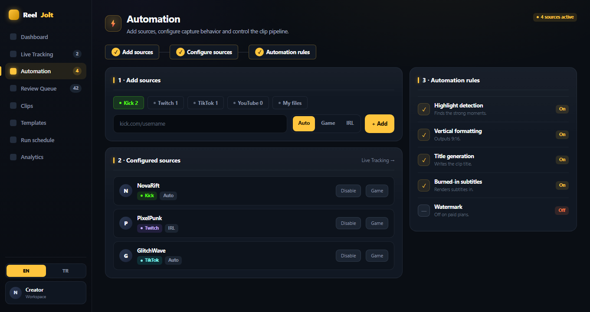

STEP 01
Add or choose a source
Paste a Kick, Twitch or TikTok channel to track it continuously, drop in a YouTube or VOD link for a one-off job, or pick a video that is already on your computer.
- Kick channel — live tracking
- Twitch channel — live tracking
- TikTok account — live tracking
- YouTube, Kick VOD and Twitch VOD links
- Local MP4, MKV, MOV and WEBM files
Local files are read in place. Jolnova never moves or deletes your originals.
